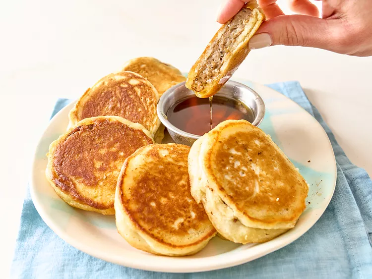

Home
Easy Sausage Pancakes

Description
These easy sausage pancakes are ready in a few minutes - all you need is pancake mix and sausage patties and you
have a yummy breakfast treat.
Ingredients
- 2 cups complete pancake mix
- 1 1/3 cups water, plus more as needed
- 3 tablespoons butter, divided
- 8 pre-cooked sausage patties
- syrup for dipping
Directions
- Combine pancake mix and water in a bowl and stir until just blended (there may be a few lumps).
- Heat half of the butter in a large nonstick skillet over medium heat until melted.
- Dip half of the sausage patties in the batter until evenly coated and place in the skillet. Cook undisturbed
until lightly browned and slightly puffed, 2 to 3 minutes. Flip and cook until the pancake is cooked
through, 2 to 3 more minutes.
- Repeat with remaining batter and sausage. Serve with syrup if desired for dipping.